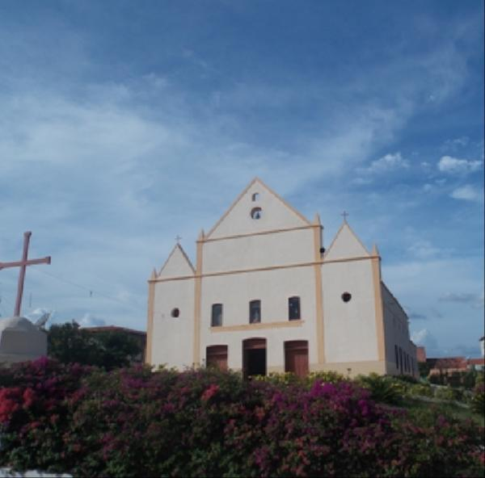

Geoinfos
Informações técnicas sobre relevo, população, IDH etc.
| INFORMAÇÕES | |
|---|---|
| Municípios limítrofes | Norte - Senador Pompeu, Milhã; Leste - Solonópole; Sul - Acopiara; Oeste - Piquet Carneiro. |
| Fundação | 28 de abril de 1988 (33 anos) |
| Área total | 470,421 km² |
| Clima | Tropical Semiárido Brando por Altitude |
| IDH | 0,6 — médio |
| PIB | R$ 33 063,481 mil |
| INFORMAÇÕES TERRITORIAIS | |
|---|---|
| Número de habitantes | 9 625 habitantes |
| Superfície de Deputado Irapuan Pinheiro |
47 042 hectares
470,42 km² |
| Densidade populacional | 20,5 ha./km² |
| Altitude de Deputado Irapuan Pinheiro | 266 metros de altitude |
| Coordenadas geográficas decimais |
Latitude:
-5.92174
Longitude: -39.2644 |
| Coordenadas geográficas sexagesimais | Latitude: 5° 55' 18'' Sul , Longitude: 39° 15' 52'' Oeste |
| INFORMAÇÕES ADMINISTRATIVAS | ||
|---|---|---|
| Prefeito de Deputado Irapuan Pinheiro | FRANCISCO GILDECARLOS PINHEIRO | |
| Partido politico | PDT | |
| INFORMAÇÕES DE TRANSPORTE | |
|---|---|
| Transporte urbano disponível | Não disponível |
| Aeroporto |
Aeroporto Regional do Cariri 144.4 km
Aeroporto Internacional Pinto Martins
252.3 km
Aeroporto Dix-Sept Rosado
225.3 km
|
| INFORMAÇÕES DE DISTÂNCIA A OUTRAS CIDADES | ||
|---|---|---|
| São Paulo : 2115 km | Rio de Janeiro : 1937 km | Brasília : 1449 km |
| Salvador : 789 km | Belo Horizonte : 1628 km | Manaus : 2325 km |
| Curitiba : 2419 km | Fortaleza : 258 km mais perto | Goiânia : 1619 km |
| Belém : 1140 km | Porto Alegre : 2962 km | Guarulhos : 2094 km |
| Campinas : 2068 km | São Luís : 675 km | Recife : 539 km |
| Distância calculada em linha reta! | ||
Fonte: Wikipedia e Cidade Brasil
História
Conheça mais sobre a história da Deputado Irapuan Pinheiro.
A história dessa área do Ceará mistura-se com os índios Quixelô, religiosos e colonizadores. Em 28 de Abril 1988 com o papel muito importante de Francisco Edson de Oliveira foi o principal contribuinte para a emancipação do município ao município de Solonópole.
Pontos Turísticos
Saiba mais sobre os melhores lugares e o que fazer em Deputado Irapuan Pinheiro.
IGREJA DE NOSSA SENHORA DA IMACULADA CONCEIÇÃO.
Como Chegar?
Veja como chegar nos melhores pontos de Deputado Irapuan Pinheiro